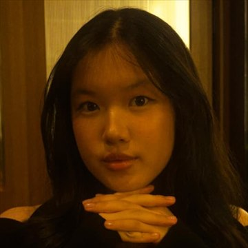

03 · The Core
Core
Four hands on the bridge
CareBridge is built around a deliberately small core: four people, four distinct responsibilities, and one shared principle that if you propose it, you see it through.
Sierra Kererein Asscabella
She is a youth leader passionate about leadership, science, diplomacy and creating impact. She enjoys exploring new ideas, taking on challenges and bringing people together to make a difference.
Qaireen Danisha Rozak
She is passionate about ballet and making a difference. She has a strong eye for recognizing problems around her and hopes to turn that awareness into positive impact.
Clairine Rachel Muliawan
She is a youth leader passionate about arts, volunteering and creating meaningful impact. She hopes to use her creativity and experiences to contribute to her community and inspire positive change.

Selena Suherman
She loves analysis, dancing and volunteering. She enjoys helping others and contributing to her community, especially when it comes to keeping track of the numbers!
Small enough to move quickly. Serious enough to finish.